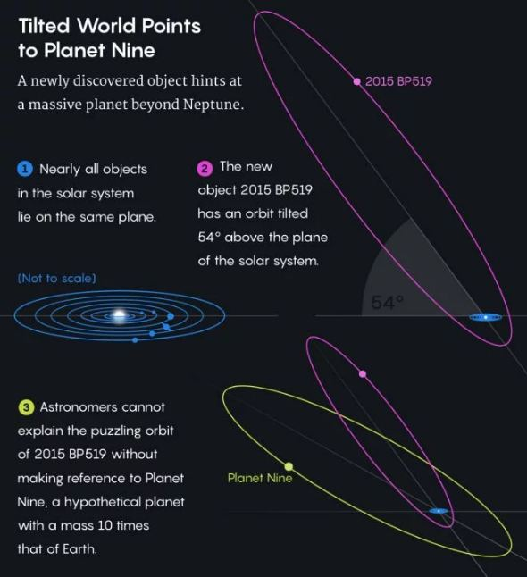

O Mistério do Planeta Nove
Nada de Nibiru: o hipotético Planeta Nove ainda instiga a comunidade científica, pois até hoje não foi possível observá-lo para comprovar sua existência. No entanto, a própria NASA já admitiu que há evidências o suficiente de que algo ali existe mesmo, e planetas-anões recentemente descobertos têm órbitas estranhas que podem ser explicadas pela presença de um objeto massivo ali na região — como é o caso do apelidado de The Goblin.
Mas se esse planeta existe mesmo, por que ainda não fomos capazes de detectá-lo? Bom, isso a gente aborda em uma outra matéria; por enquanto, lembramos que análises recentes reforçam a existência do suposto planeta, e também há quem pense que o Planeta Nove, na verdade, poderia ser um montão de objetos menores "trabalhando" em sincronia. Mas, agora, um novo estudo sugere que o tal planeta pode ser um buraco negro primordial.
O estudo foi conduzido pelos astrônomos Jakub Scholtz, da Universidade de Durham (na Inglaterra), e James Unwin, da Universidade de Illinois (nos EUA) , e eles levantam a ideia de que o Planeta Nove poderia mesmo ser um buraco negro deste tipo, com evidências que embasam sua suspeita.
Um buraco negro primordial é um objeto hipotético, é verdade, que corresponderia a um buraco negro relativamente pequeno, porém antigo. Este tipo de buraco negro seria formado como consequência de flutuações de densidade que aconteceram no início do universo conhecido, pouco tempo depois do Big Bang. E, se tais objetos existem, os de menor massa já evaporaram há muito tempo, mas os mais massivos poderiam ter sobrevivido até os dias de hoje.
Scholtz e Unwin calcularam, então, que um buraco negro primordial com massa aproximada de cinco vezes a da Terra (e um raio de cerca de apenas cinco centímetros) poderia explicar as anomalias gravitacionais observadas na região onde o suposto Planeta Nove estaria, para além de Netuno, quase na "esquina" do Sistema Solar. Sendo assim, este tipo hipotético de buraco negro seria mais um candidato capaz de explicar os fenômenos misteriosos observados naquela região.